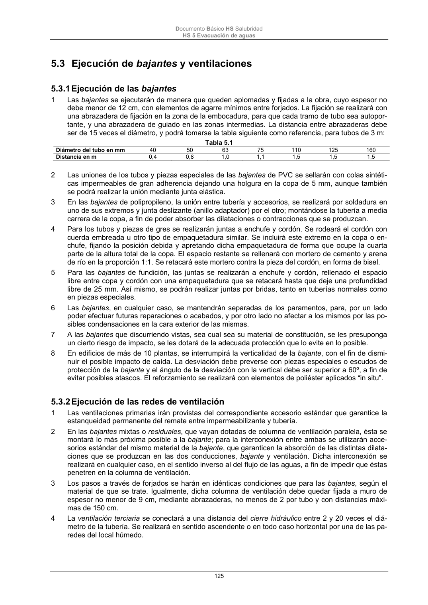

DB-HS Salubridad · edición 2022-06-14 · capa oficial
Documento DB-HS-oficial · SHA-256 del PDF 68df3caacc95f71aee2ec1ba7b2c65ae66155c21e3a8785521b8fdd4fd640d3b
Copia fiel del PDF fuente · Fuente oficial
Ficha de la disposición en la fuente oficial
Formatos: JSON del segmento · Markdown
5.3 Ejecución de bajantes y ventilaciones 5.3.1 Ejecución de las bajantes 5.3.1 Ejecución de las bajantes 1 Las bajantes se ejecutarán de manera que queden aplomadas y fijadas a la obra, cuyo espesor no debe menor de 12 cm, con elementos de agarre mínimos entre forjados. La fijación se realizará con una abrazadera de fijación en la zona de la embocadura, para que cada tramo de tubo sea autopor- tante, y una abrazadera de guiado en las zonas intermedias. La distancia entre abrazaderas debe ser de 15 veces el diámetro, y podrá tomarse la tabla siguiente como referencia, para tubos de 3 m: Tabla 5.1 Diámetro del tubo en mm 40 50 63 75 110 125 160 Distancia en m 0,4 0,8 1,0 1,1 1,5 1,5 1,5 2 Las uniones de los tubos y piezas especiales de las bajantes de PVC se sellarán con colas sintéti- cas impermeables de gran adherencia dejando una holgura en la copa de 5 mm, aunque también se podrá realizar la unión mediante junta elástica. 3 En las bajantes de polipropileno, la unión entre tubería y accesorios, se realizará por soldadura en uno de sus extremos y junta deslizante (anillo adaptador) por el otro; montándose la tubería a media carrera de la copa, a fin de poder absorber las dilataciones o contracciones que se produzcan. 4 Para los tubos y piezas de gres se realizarán juntas a enchufe y cordón. Se rodeará el cordón con cuerda embreada u otro tipo de empaquetadura similar. Se incluirá este extremo en la copa o en- chufe, fijando la posición debida y apretando dicha empaquetadura de forma que ocupe la cuarta parte de la altura total de la copa. El espacio restante se rellenará con mortero de cemento y arena de río en la proporción 1:1. Se retacará este mortero contra la pieza del cordón, en forma de bisel. 5 Para las bajantes de fundición, las juntas se realizarán a enchufe y cordón, rellenado el espacio libre entre copa y cordón con una empaquetadura que se retacará hasta que deje una profundidad libre de 25 mm. Así mismo, se podrán realizar juntas por bridas, tanto en tuberías normales como en piezas especiales. 6 Las bajantes, en cualquier caso, se mantendrán separadas de los paramentos, para, por un lado poder efectuar futuras reparaciones o acabados, y por otro lado no afectar a los mismos por las po- sibles condensaciones en la cara exterior de las mismas. 7 A las bajantes que discurriendo vistas, sea cual sea su material de constitución, se les presuponga un cierto riesgo de impacto, se les dotará de la adecuada protección que lo evite en lo posible. 8 En edificios de más de 10 plantas, se interrumpirá la verticalidad de la bajante, con el fin de dismi- nuir el posible impacto de caída. La desviación debe preverse con piezas especiales o escudos de protección de la bajante y el ángulo de la desviación con la vertical debe ser superior a 60º, a fin de evitar posibles atascos. El reforzamiento se realizará con elementos de poliéster aplicados “in situ”.
